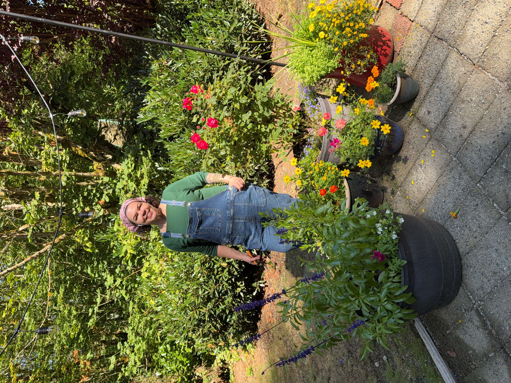
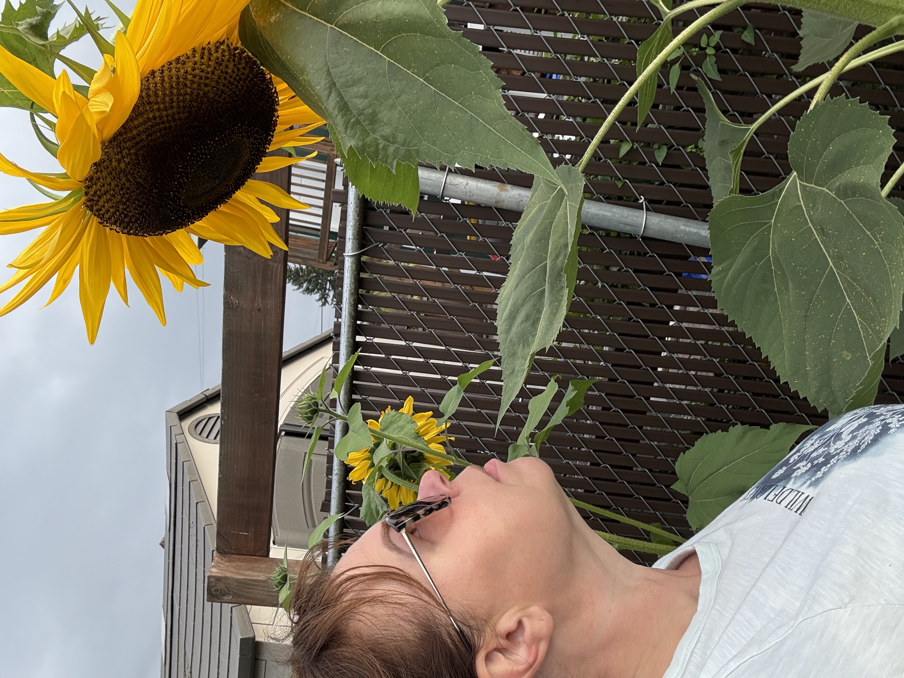
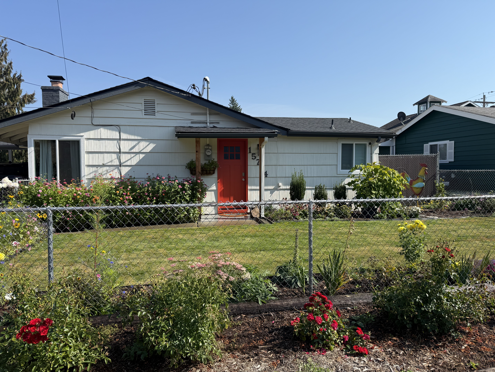
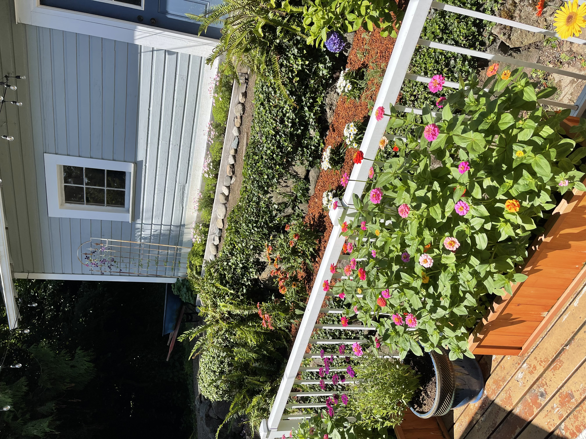

Hobbies & Interests
Heather's love of gardening began as a peaceful weekend activity and grew into a lasting creative passion.
Gardening & Planting
Heather's interest in gardening began after moving to Portland in 2011. While working full time and attending school at night, she was looking for a peaceful way to spend her weekends. A yard that was mostly dirt and bark became an opportunity to create the flower-filled outdoor space she had imagined.
Her first raised garden beds were an experiment, but watching the first seedlings emerge from the soil sparked an interest that has continued ever since.


Growing & Creating
Today, Heather especially enjoys growing flowers from seed, with zinnias among her favorites. She also appreciates plants that combine beauty with practical uses. Gardening gives her the opportunity to experiment, create, and watch an outdoor space change throughout the seasons.
Home & Garden
One of Heather's most meaningful gardening projects began in 2017, when her family purchased an overgrown 1936 Cape Cod home outside Seattle. What initially appeared to be an unruly property turned out to contain decades of carefully designed gardens, ornamental trees, perennial flowers, and unique garden features.


A Space to Enjoy
Restoring the property became a process of uncovering and nurturing what was already there rather than simply starting over. For Heather, gardening is not only about creating something beautiful but also about discovering possibilities in what already exists.
Curiosity & Purpose
Whether she is tending a garden, working on a home project, spending time with family, or learning something new, Heather approaches life with curiosity and purpose. She values creativity, growth, and the simple satisfaction of making something a little better than she found it.
Something She Enjoys
Heather also enjoys finding humor and relatable moments in everyday life. One of the places she likes to find this is through Elyse Myers' videos.
Visit Elyse Myers on YouTube